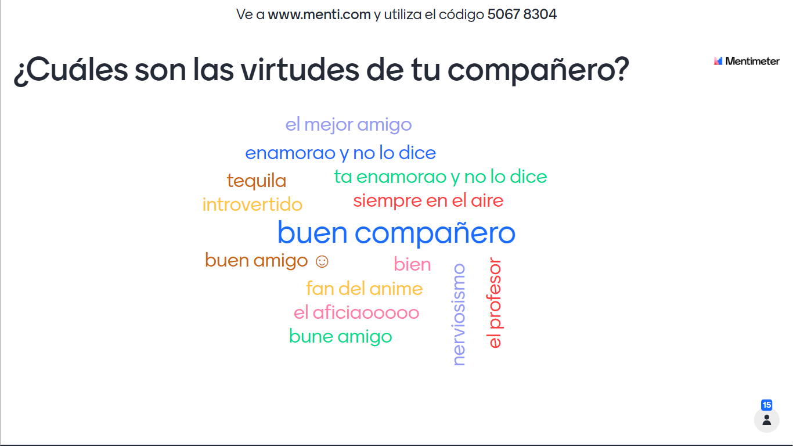
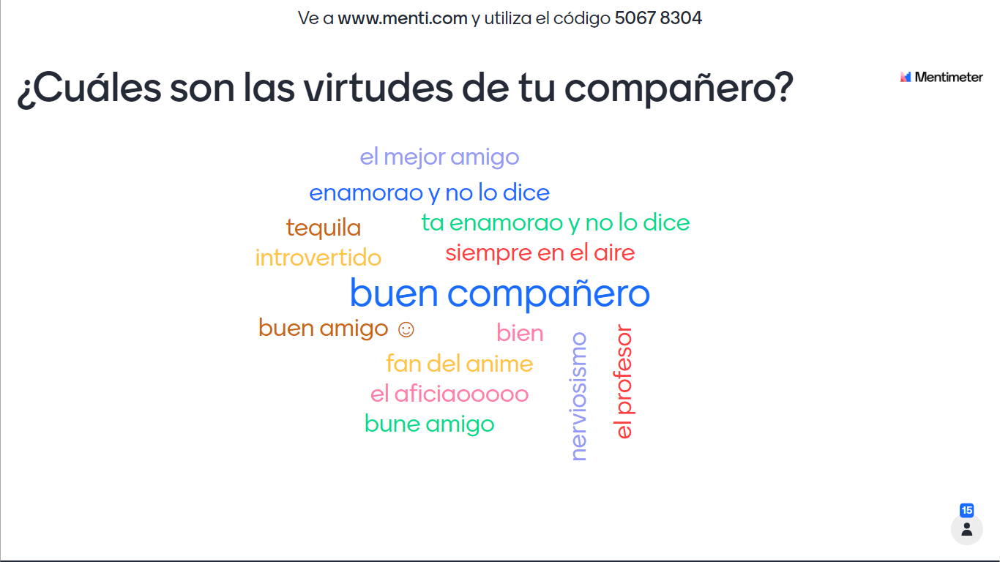

hola soy carlos me gusta el queso y tambien el salami no se que escribir y bueno pues esta todo bien Justo en mi boda fue (en nuestra boda fue) Todo estaba listo con un clima precioso esa vez (ninguna nube esa vez) Bruno con voz misteriosa habló (trueno) ¿Tú cuentas la historia o lo hago yo? (Lo siento, mi vida, hazlo tú) "Veo que pronto lloverá" (¿qué insinuaba?) Sabrás que lo tomé muy mal (abuela, ten las sombrillas) Boda en un huracán (fue un día feliz pero es verdad) No se habla de Bruno, no, no, no No se habla de Bruno (ey)
soy carlos ya lo dije y tengo 18 años no se mucho de esto pero bueno esta todo bien Justo en mi boda fue (en nuestra boda fue) Todo estaba listo con un clima precioso esa vez (ninguna nube esa vez) Bruno con voz misteriosa habló (trueno) ¿Tú cuentas la historia o lo hago yo? (Lo siento, mi vida, hazlo tú) "Veo que pronto lloverá" (¿qué insinuaba?) Sabrás que lo tomé muy mal (abuela, ten las sombrillas) Boda en un huracán (fue un día feliz pero es verdad) No se habla de Bruno, no, no, no No se habla de Bruno (ey)
no hay muchas sosas que me enojan pero lo que si es cuando las personas critican en general y bueno no me acuerdo que mas Justo en mi boda fue (en nuestra boda fue) Todo estaba listo con un clima precioso esa vez (ninguna nube esa vez) Bruno con voz misteriosa habló (trueno) ¿Tú cuentas la historia o lo hago yo? (Lo siento, mi vida, hazlo tú) "Veo que pronto lloverá" (¿qué insinuaba?) Sabrás que lo tomé muy mal (abuela, ten las sombrillas) Boda en un huracán (fue un día feliz pero es verdad) No se habla de Bruno, no, no, no No se habla de Bruno (ey)
hay muchas cosas que me hacen unoco pero ahora no me acuerdo asi que bueno Justo en mi boda fue (en nuestra boda fue) Todo estaba listo con un clima precioso esa vez (ninguna nube esa vez) Bruno con voz misteriosa habló (trueno) ¿Tú cuentas la historia o lo hago yo? (Lo siento, mi vida, hazlo tú) "Veo que pronto lloverá" (¿qué insinuaba?) Sabrás que lo tomé muy mal (abuela, ten las sombrillas) Boda en un huracán (fue un día feliz pero es verdad) No se habla de Bruno, no, no, no No se habla de Bruno (ey)
.png)
 
